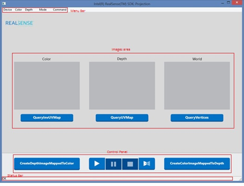
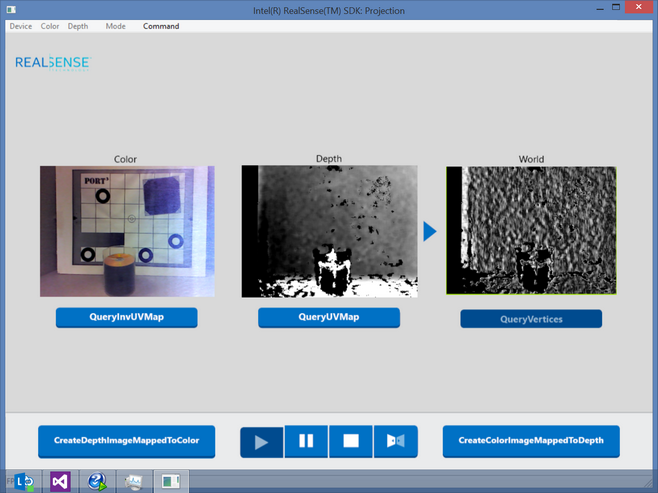
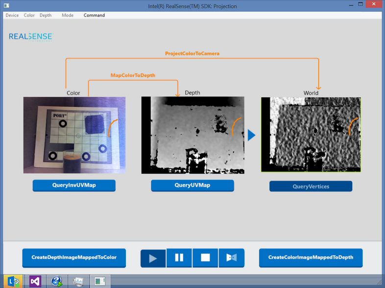
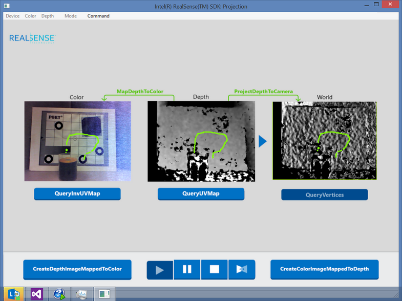
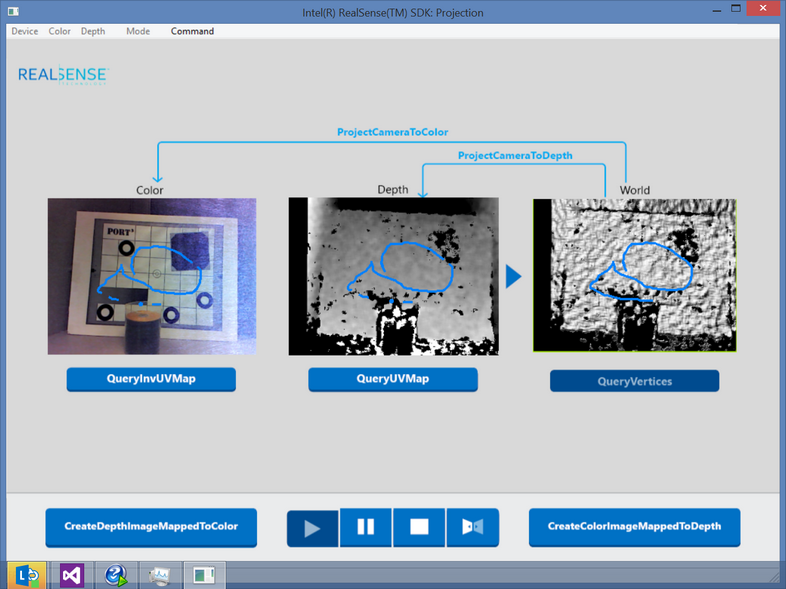
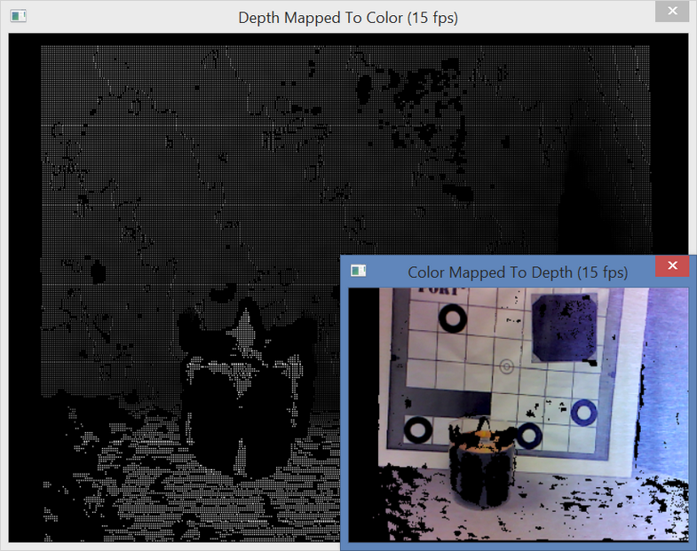

Sample: DF_Projection |
Top Previous Next |
|
The DF_Projection sample demonstrates how to use the SDK PXC[M]Projection functions. The projection functions map or project coordinates among the color image coordinate system, the depth image coordinate system, and the camera coordinate system. You can run the sample through pre-built binaries under $(RSSDK_DIR)/bin/$(Platform), or build from source code, under $(RSSDK_DIR)/sample/DF_Projection.  Figure 118: The Sample Main Window The main window is shown in Figure 118. It contains the following components:
Click on the QueryInvUVMap button to show the inverse UV map data, if not shown initially. The inverse UV map provides coordinates mapping from the color image to the depth image. Click on the QueryUVMap button to show the UV map data, if not shown initially. The UV map provides coordinates mapping from the depth image to the color image. Click on the QueryVertices button to show the vertices data, if not shown initially. The vertices data is in the 3D space. For rendering simplicity, the sample projects it to a 2D plane for visualization. The sample applies some lighting effect when you move your mouse to give a pseudo 3D effect.  Figure 119: The Color/Depth/Vertices Visualization You can draw on any of the three panels: color, depth and vertices. The sample maps the coordinates to the other panels and draws on them accordingly, with the mapping/projection functions marked for such operation. See Figure 120 - Figure 122.  Figure 120: Map/Project Color Coordinates to Depth/Camera Coordinates
 Figure 121: Map Depth Coordinates to Color and Camera Coordinates  Figure 122: Project Camera Coordinates to Color and Depth Image Coordinates.
 Figure 123: Create Aligned Color/Depth Images
|